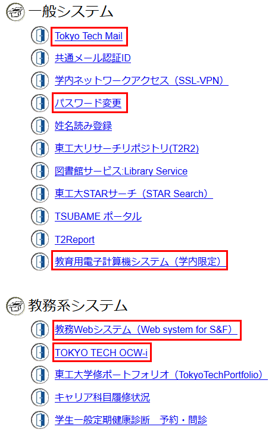

情報リテラシ第一 第2週
2020年5月11日 (月) 1-2限
- 本授業の成績について
- パスワードの再設定
- 姓名読み登録
- ポータルサイトでできること
- Mac の超基本的な使い方
- コンピュータは情報をどのように扱っているか
- 情報量の単位
- 本日のまとめ・小課題
- 来週の予定
雑談
英語の YouTube を見ると、日本人がやってるのとレベルが全然違う:
いいところ
- 個人で作っている。
- ただ「面白いだけの動画」ではない。
- 数式がふつうに出てくる。
結論: 英語ができれば、良質な教材がタダで手に入る。
0. 本授業の成績について
- 東工大では、成績は点数 (0〜100点) によってつけられます。
- 本授業の内訳 (単位取得には60点が必要):
- 履修: 10点
- 授業参加: 5点×7回 = 35点 (当てられたら質問に答える)
- 小課題: 5点×5回 = 25点 (本日も小課題があります)
- 中課題: 10点×3回 = 30点
1. パスワードの再設定
- 教育用システムとポータルサイト用両方に使うための、
強力なパスワードを考えよ。
- それを記憶せよ。
- あれほど「パスワードは同じものを使うな」といいましたが…
- 教育用パソコン・ポータルサイトで同じパスワードを使ってよい。
- ただし、推測されにくい (=強い) ものにすること。
(自信がない場合は紙に書きましょう。)
- 手順:
-
まず教育用パソコンに前回決めた(暫定的な)パスワードでログインする。
-
教育用パソコンのパスワードを変更する。
- ポータルサイトを開き、パスワードを変更する。
-
教育用パソコンを再起動して、再度ログインする。
- パスワードは何度でも変更できます。
自分のパスワードに自信がない(?)場合は、より強そうなパスワードに変更すべし。
1.1. キーチェーンのダイアログに対処する
パスワードを変更して再度ログインした場合、
「ログインキーチェーンのロックを解除できませんでした」という
ウィンドウが表示されることがある。
このような場合は「新しいキーチェーンの作成」をクリックすること。
1.2. パスワードを忘れた場合
- 教育用パソコンのパスワードを忘れた場合 …
"portal" / "portal" でログインして、やり直す。
- ポータルサイトのパスワードを忘れた場合 …
封筒に書いてある PIN番号を使って、西8号館1階の教務課でリセットしてもらう。
Tokyo Tech Portal - 困ったときは
- 注意:
いまは大学が閉鎖されているため、パスワードを忘れると戻す手段がありません。
1.3. おすすめのパスワードマネージャ
- 複数のサイトで異なるパスワードを全部覚えておくのは大変!
- 解決策1. ブラウザのパスワード管理機能を使う。
→ スマートフォンとPCを両方使うときに不便。
- 解決策2. パスワードマネージャを使うと便利:
- 複数のサイトのパスワードを登録しておく。
- ログインするときにパスワードをコピー・ペーストする。
- 「マスターパスワード」を1つ覚えておけばOK。
- 有料のもの:
Dashlane,
Keeper,
1Password
- 無料のもの: Bitwarden
2. 姓名読み登録
姓名読み登録をすると、大学のメールアドレスが使えるようになります。
- ローマ字で Yusuke Shinyama のように登録する (名・姓の順。1文字目は大文字。)
姓名読み登録
- これを登録すると、電子メールが使えるようになる。
- 一度しか入力できないので、絶対に間違えないこと!
3. ポータルサイトでできること

- 「Tokyo Tech Mail」 (電子メール)
- 「パスワード変更」 (ポータルサイトのパスワード変更)
- 「教育用電子計算機システム」 (教育用パソコンのパスワード変更)
- 「教務Webシステム」 (授業の履修申告・成績の閲覧)
- 「TOKYO TECH OCW-i」 (授業の資料閲覧・課題提出)
3.1. 学内Wifiの使い方
- "TokyoTech" ネットワークに接続する。
- あるパスワード (固定) を入力する。
- うまくいかない場合はブラウザのアドレス欄に
"
www.example.com" を入力する。
3.2. 注意・アカウントを他人に使わせない
- 間違い: 「自分なんて誰からも狙われないだろう」
- 犯罪者の考えることはみな同じ。
「自分では直接手を出さない → 他人に罪をかぶせる」
- 自分のパスワード・銀行口座等を人に使わせると、
なりすましの温床になります。
- 犯罪に使われる、コードを盗まれる、「いいね」を売る
(ハックされたPCの価値)
3.3. 教務WebシステムとOCW-i
- おそらく一番重要。授業の履修申告をする。
(大学では、履修申告しないと授業を受けたことになりません)
- OCW-i で授業のスライドを見たり、課題を提出したりする。
(授業によって使う場合とそうでない場合があります)
- 第1クォータ (1Q) の履修申告締め切りは 4月19日。
第2クォータ (2Q) の授業は、あとからでも追加できます。
- 2Q におこなう情報リテラシ第二の履修をぜひともおすすめします。
- 成績の閲覧もここでおこないます。
4. Mac の超基本的な使い方
- ブラウザ = "Safari" (最初のうちは、ほとんどこれしか使わない)
- エクスプローラ = "Finder"
- ポータルサイトを開くには、右側のアイコンをダブルクリックする。
- 「1アプリ = 1メニュー」 ウィンドウではない。
- Altキー = Command (⌘) キー:
| 動作 | Windows | Mac |
|---|
| 切り取り (カット) | Ctrl + X | ⌘ + X |
| コピー | Ctrl + C | ⌘ + C |
| 貼り付け (ペースト) | Ctrl + V | ⌘ + V |
| ウィンドウを閉じる | Alt + F4 | ⌘ + W |
| アプリを終了 | Alt + F4 | ⌘ + Q |
| ファイルの保存 | Ctrl + S | ⌘ + S |
5. コンピュータは情報をどのように扱っているか
コンピュータで制御している以下の機器について、
それぞれ入力装置、出力装置、記憶装置の例を挙げよ。
5.1. コンピュータの原理
- コンピュータにとって、地球上のすべての機械は
ただの入出力装置である (人間を含む)。
- 炊飯器の場合: 入力装置・出力装置は?
- エレベータの場合: 入力装置・出力装置は?
- 装置の間で渡されるあらゆる情報 (= 文字・画像・音声・動画など) は、
すべて 2種類の異なる状態の組み合わせで表される:
5.2. 数値 (整数) を 0 と 1で表すには
- 10種類の数字を使う: 10進数 (ふつうの数)
- 8種類の数字のみ使う: 8進数
- 2種類の数字のみ使う: 2進数 … 0 と 1 のみで数を表現する。
n桁の2進数 = 2n通りの数を表現可能。
5.3. 文字を 0 と 1で表すには
- 1文字 = 1つの数値で表わす。
数値を並べれば文章が表現できる。
5.4. 画像を 0 と 1で表すには
5.5. 色を 0 と 1で表すには
- 色とは何か?
- 桿体細胞 (明るさを認識する)
- 錐体細胞 (色を認識する -
赤、
緑、
青のあたりにピークがある)
-
R,
G,
B
の各成分をそれぞれ 256段階の数値で表す
= 256×256×256種類の色が表現可能
これをピクセルの数だけ並べれば画像が表現できる。
5.6. 音声を 0 と 1で表す
- 音とは何か?
- 波形の形を数値の列によって表す:
10, 25, 35, 40, 45, 40, 35, ...
- 人間の可聴領域: 20Hz 〜 20,000Hz。
6. 情報量の単位
- ビット (bit) … 1つの 0 または 1 (で表される情報)。
- バイト (byte) … 8つの 0 または 1 (=8ビット)。
- ヘルツ (Hz) … 「1秒間に何回実行可能か」をあらわす単位。
- bps (bits per second) … 「1秒間に何ビット送信するか」をあらわす単位。
6.1. 接頭語
- K (キロ) = 103 = 1,000
- M (メガ) = 106 = 1,000,000
- G (ギガ) = 109 = 1,000,000,000
- T (テラ) = 1012 = 1,000,000,000,000
- P (ペタ) = 1015 = 1,000,000,000,000,000
小さな数の場合:
- m (ミリ) = 10-3 = 0.001
- μ (マイクロ) = 10-6 = 0.000 001
- n (ナノ) = 10-9 = 0.000 000 001
コンピュータの世界では、210 = 1024 ≈ 1000 なので、
接頭語を以下のように微妙に変えて使うことがある:
- Ki (キロ) = 210 = 1,024
- Mi (メガ) = 220 = 1,048,576
- Gi (ギガ) = 230 = 1,073,741,824
6.2. いろいろな量のめやす
- 一般的なパソコンの動作周波数 … 1GHz = 109回の処理/秒。
- 1回の処理にかかる時間 … 1ナノ秒 = 10-9秒。
- メモリの容量 … 4Gバイト。
- ハードディスクの容量 … 500Gバイト。
- 日本から欧米までのネットワーク遅延 … 150ミリ秒。
(コンピュータが命令を実行する時間を 1秒とすると、これは約12年に相当する。)
- 参考資料1,
参考資料2
7. 本日のまとめ・小課題
-
教育用パソコン・ポータルサイト両方で使えるパスワードを設定した。
- ポータルサイトの基本的な使い方。
- Macの超基本的な使い方。
- コンピュータはすべての情報を 0 と 1 の羅列で扱っている。
- Quiz 1 に答えよ。
- 締め切り: 5月18日 (1週間後)
8. 来週の予定
- ネットワークのしくみ。
- 電子メールの使い方。
- 中課題。
Yusuke Shinyama
{kind=link}